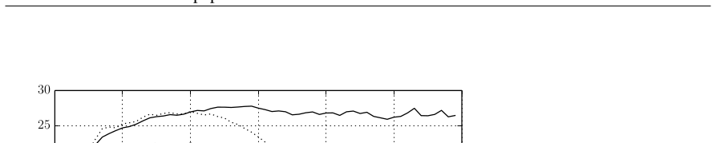
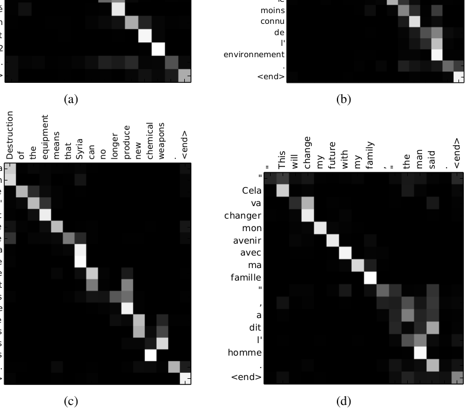

中文导读译自 arXiv:1409.0473（对照 英文 PDF）。即本课第 13 课「注意力」的源头论文。
Neural Machine Translation by Jointly Learning to Align and Translate
神经机器翻译是较新的翻译范式：与由许多子模块拼成的传统统计机器翻译不同，它训练一个端到端的大网络来读句并输出译文。当时的 NMT 多属编码器—解码器：编码器把源句压成固定长度向量，解码器再据此生成。我们推测固定长度向量正是性能瓶颈，因而扩展该架构——让模型在预测每个目标词时，自动（软）搜索源句中相关的位置，而不必事先切成硬短语。在英→法任务上，该方法达到与当时最强基于短语的系统相当的水平；定性分析也表明学到的软对齐符合直觉。
神经机器翻译是机器翻译中一种新兴的方法，最近由 Kalchbrenner 和 Blunsom（2013）、Sutskever 等（2014）以及 Cho 等（2014b）提出。传统的基于短语的翻译系统（例如 Koehn 等，2003）由许多分别调优的小型子组件构成；与此不同，神经机器翻译试图构建并训练一个单一的大型神经网络，该网络读取句子并输出正确的翻译。
大多数已提出的神经机器翻译模型属于编码器—解码器家族（Sutskever 等，2014；Cho 等，2014a），其中每种语言都有一个编码器和一个解码器，或者对每个句子应用一个语言特定的编码器，然后比较其输出（Hermann 和 Blunsom，2014）。编码器神经网络读取源句子并将其编码为固定长度向量。解码器随后从编码后的向量输出翻译。整个编码器—解码器系统由该语言对的编码器和解码器组成，并经过联合训练，以最大化给定源句子时正确翻译的概率。
这种编码器—解码器方法的一个潜在问题是：神经网络需要能够将源句子的所有必要信息压缩到一个固定长度向量中。这可能使神经网络难以处理长句子，尤其是那些比训练语料中的句子更长的句子。Cho 等（2014b）表明，基本编码器—解码器的性能确实会随着输入句子长度的增加而迅速下降。
为了解决这个问题，我们引入了一种编码器—解码器模型的扩展，它学习联合地进行对齐和翻译。所提出的模型每次在翻译中生成一个词时，都会（软）搜索源句子中信息最相关的一组位置。然后，模型根据与这些源位置相关联的上下文向量以及所有先前生成的目标词来预测目标词。
从概率角度看，翻译等价于寻找一个目标句子 y，使得给定源句子 x 时 y 的条件概率最大，即 arg maxy p(y | x)。在神经机器翻译中，我们使用平行训练语料拟合一个参数化模型，以最大化句子对的条件概率。一旦翻译模型学习到条件分布，给定源句子，就可以通过搜索使条件概率最大的句子来生成相应翻译。
最近，许多论文提出使用神经网络直接学习这种条件分布（例如 Kalchbrenner 和 Blunsom，2013；Cho 等，2014a；Sutskever 等，2014；Cho 等，2014b；Forcada 和 Neco，1997）。这种神经机器翻译方法通常由两个组件构成：第一个组件编码源句子 x，第二个组件解码为目标句子 y。例如，Cho 等（2014a）和 Sutskever 等（2014）使用两个循环神经网络（RNN）将变长源句子编码为固定长度向量，并将该向量解码为变长目标句子。
尽管神经机器翻译是一种相当新的方法，但它已经显示出有希望的结果。Sutskever 等（2014）报告称，基于带有长短期记忆（LSTM）单元的 RNN 的神经机器翻译，在英语—法语翻译任务上达到了接近传统基于短语的机器翻译系统的最先进性能。将神经组件加入现有翻译系统，例如为短语表中的短语对打分（Cho 等，2014a）或对候选翻译进行重排序（Sutskever 等，2014），已经能够超越此前的最先进性能水平。
这种方法与基本编码器—解码器最重要的区别特征在于：它并不试图将整个输入句子编码为单个固定长度向量。相反，它将输入句子编码为向量序列，并在解码翻译时自适应地选择这些向量的子集。这使神经翻译模型不必再将源句子的所有信息——无论其长度如何——都压缩到一个固定长度向量中。我们表明，这使模型能够更好地处理长句子。
在本文中，我们表明所提出的联合学习对齐和翻译的方法相比基本编码器—解码器方法显著提高了翻译性能。这种改进在较长句子上更为明显，但在任何长度的句子上都可以观察到。在英语—法语翻译任务上，所提出的方法使用单一模型取得了与传统的基于短语的系统相当或接近的翻译性能。此外，定性分析表明，所提出的模型在源句子和相应目标句子之间找到了语言上合理的（软）对齐。
这里我们简要描述 Cho 等（2014a）和 Sutskever 等（2014）提出的底层框架，称为 RNN 编码器—解码器；我们在此基础上构建一种同时学习对齐和翻译的新架构。
在编码器—解码器框架中，编码器将输入句子——一个向量序列 x = (x1, …, xTx)——读入一个向量 c。最常见的方法是使用 RNN，使得
以及
其中 ht ∈ ℝn 是时刻 t 的隐藏状态，c 是由隐藏状态序列生成的向量。f 和 q 是一些非线性函数。例如，Sutskever 等（2014）使用 LSTM 作为 f，并令 q({h1, …, hT}) = hT。
解码器通常被训练为：给定上下文向量 c 和所有先前预测的词 {y1, …, yt′−1}，预测下一个词 yt′。换句话说，解码器通过将联合概率分解为有序条件概率，定义翻译 y 上的概率：
其中 y = (y1, …, yTy)。使用 RNN 时，每个条件概率建模为
其中 g 是一个非线性、可能是多层的函数，输出 yt 的概率；st 是 RNN 的隐藏状态。应当注意，也可以使用其他架构，例如 RNN 与反卷积神经网络的混合架构（Kalchbrenner 和 Blunsom，2013）。
在本节中，我们提出一种用于神经机器翻译的新架构。新架构由一个双向 RNN 作为编码器（第 3.2 节）和一个在解码翻译时模拟搜索源句子的解码器（第 3.1 节）组成。
在新模型架构中，我们将式（2）中的每个条件概率定义为：
其中 si 是时刻 i 的 RNN 隐藏状态，计算为
应当注意，与现有的编码器—解码器方法（见式（2））不同，这里的概率以每个目标词 yi 各自的上下文向量 ci 为条件。
上下文向量 ci 依赖于编码器将输入句子映射到的一组注释 (h1, …, hTx)。每个注释 hi 包含关于整个输入序列的信息，并强烈关注输入序列中第 i 个词周围的部分。我们将在下一节详细解释注释如何计算。
然后，上下文向量 ci 计算为这些注释 hi 的加权和：
每个注释 hj 的权重 αij 由下式计算：
其中
是一个对齐模型，用于评分输入中位置 j 附近的内容与输出中位置 i 的匹配程度。该分数基于 RNN 隐藏状态 si−1（即在生成 yi 之前，见式（4））和输入句子的第 j 个注释 hj。
我们将对齐模型 a 参数化为一个前馈神经网络，并与所提出系统的所有其他组件联合训练。注意，与传统机器翻译不同，对齐不被视为潜变量。相反，对齐模型直接计算软对齐，这允许代价函数的梯度反向传播。该梯度可用于训练对齐模型以及整个翻译模型联合训练。
对注释做加权和，可理解为在可能对齐上的期望注释。αij 表示目标词 yi 与源词 xj 对齐（或由 xj 译出）的概率，于是上下文 ci 就是以 αij 为权重的期望注释。
αij（或其能量 eij）刻画注释 hj 对下一状态 si 与生成 yi 有多重要——这就是解码器里的注意力：决定此刻该看源句哪里。编码器不必再把整句塞进一个固定向量；信息可以铺在整条注释序列上，由解码器按需取回。本课第 13、14 课里的「按位置加权求和」即源于此。
式（1）中描述的通常 RNN 按顺序读取输入序列 x，从第一个符号 x1 到最后一个 xTx。然而，在所提出的方案中，我们希望每个词的注释不仅概括前面的词，还概括后面的词。因此，我们提出使用双向 RNN（BiRNN，Schuster 和 Paliwal，1997），它最近已成功用于语音识别（例如 Graves 等，2013）。
BiRNN 由前向和后向 RNN 组成。前向 RNN →f 按输入序列的顺序（从 x1 到 xTx）读取输入序列，并计算前向隐藏状态序列 (→h1, …, →hTx)。后向 RNN ←f 按相反顺序（从 xTx 到 x1）读取序列，得到后向隐藏状态序列 (←h1, …, ←hTx)。
我们通过拼接前向隐藏状态 →hj 和后向隐藏状态 ←hj，获得每个词 xj 的注释，即 hj = [→hj⊤; ←hj⊤]⊤。这样，注释 hj 包含前面词和后面词的摘要。由于 RNN 倾向于更好地表示近期输入，注释 hj 将聚焦于 xj 周围的词。该注释序列随后由解码器和对齐模型用于计算上下文向量（式（5）—（6））。
所提出模型的图形说明见图 1。
我们在英语—法语翻译任务上评估所提出的方法。我们使用 ACL WMT ’14 提供的双语平行语料。作为比较，我们还报告了 Cho 等（2014a）最近提出的 RNN 编码器—解码器的性能。两个模型使用相同的训练过程和相同的数据集。4
WMT ’14 包含以下英语—法语平行语料：Europarl（6100 万词）、新闻评论（550 万词）、UN（4.21 亿词），以及两个爬取语料，分别为 9000 万词和 2.725 亿词，总计 8.5 亿词。按照 Cho 等（2014a）描述的过程，我们使用 Axelrod 等（2011）的数据选择方法，将合并语料的大小缩减为 3.48 亿词。5 除了上述平行语料外，我们不使用任何单语数据，尽管使用更大的单语语料预训练编码器是可能的。我们将 news-test-2012 和 news-test-2013 拼接起来作为开发（验证）集，并在 WMT ’14 的测试集（news-test-2014）上评估模型，该测试集包含 3003 个未出现在训练数据中的句子。
经过通常的分词后，我们使用每种语言中 30,000 个最频繁词组成的词表短名单来训练模型。任何不在短名单中的词都映射到特殊标记 [UNK]。我们不应用其他特殊预处理，例如小写化或词干化。
我们训练两种类型的模型。第一种是 RNN 编码器—解码器（RNNencdec，Cho 等，2014a），另一种是所提出的模型，我们称之为 RNNsearch。每个模型训练两次：首先使用长度不超过 30 个词的句子（RNNencdec-30、RNNsearch-30），然后使用长度不超过 50 个词的句子（RNNencdec-50、RNNsearch-50）。
RNNencdec 的编码器和解码器各有 1000 个隐藏单元。RNNsearch 的编码器由前向和后向循环神经网络（RNN）组成，每个各有 1000 个隐藏单元。其解码器有 1000 个隐藏单元。两种情况下，我们都使用一个带单层 maxout（Goodfellow 等，2013）隐藏层的多层网络来计算每个目标词的条件概率（Pascanu 等，2014）。
我们使用小批量随机梯度下降（SGD）算法和 Adadelta（Zeiler，2012）训练每个模型。每次 SGD 更新方向使用 80 个句子的小批量计算。每个模型训练约 5 天。
模型训练完成后，我们使用束搜索寻找近似最大化条件概率的翻译（例如 Graves，2012；Boulanger-Lewandowski 等，2013）。Sutskever 等（2014）使用这种方法从他们的神经机器翻译模型生成翻译。
关于实验中使用的模型架构和训练过程的更多细节，见附录 A 和 B。
表 1 列出了以 BLEU 分数衡量的翻译性能。从表中可以清楚地看出，在所有情况下，所提出的 RNNsearch 都优于传统的 RNNencdec。更重要的是，当只考虑由已知词组成的句子时，RNNsearch 的性能与传统的基于短语的翻译系统（Moses）一样高。考虑到 Moses 除了我们用于训练 RNNsearch 和 RNNencdec 的平行语料外，还使用了单独的单语语料（4.18 亿词），这是一个重大成就。

| 模型 | 全部 | 无 UNK° |
|---|---|---|
| RNNencdec-30 | 13.93 | 24.19 |
| RNNsearch-30 | 21.50 | 31.44 |
| RNNencdec-50 | 17.82 | 26.71 |
| RNNsearch-50 | 26.75 | 34.16 |
| RNNsearch-50* | 28.45 | 36.15 |
| Moses | 33.30 | 35.63 |
所提出方法背后的动机之一，是基本编码器—解码器方法使用了固定长度上下文向量。我们推测，这一限制可能使基本编码器—解码器方法在长句子上表现不佳。在图 2 中，我们看到 RNNencdec 的性能随着句子长度增加而急剧下降。另一方面，RNNsearch-30 和 RNNsearch-50 对句子长度都更加稳健。特别是 RNNsearch-50，即使句子长度达到 50 或更多，也没有表现出性能退化。RNNsearch-30 甚至优于 RNNencdec-50（见表 1），进一步证实了所提出模型相对基本编码器—解码器的优越性。
所提出的方法提供了一种直观方式来检查生成的翻译中的词与源句子中的词之间的（软）对齐。这可以通过可视化式（6）中的注释权重 αij 来完成，如图 3 所示。每个图中矩阵的每一行表示与注释相关联的权重。由此我们可以看到，在生成目标词时，源句子中的哪些位置被认为更重要。
从图 3 的对齐可以看出，英语和法语之间的词对齐在很大程度上是单调的。我们看到每个矩阵对角线上的强权重。然而，我们也观察到许多非平凡的、非单调的对齐。形容词和名词在法语和英语中的顺序通常不同，我们在图 3（a）中看到一个例子。从该图可以看出，模型正确地将短语 [European Economic Area] 翻译为 [zone économique européen]。RNNsearch 能够正确地将 [zone] 与 [Area] 对齐，跳过两个词（[European] 和 [Economic]），然后每次回看一个词，完成整个短语 [zone économique européen]。
软对齐相对于硬对齐的优势，例如从图 3（d）中可以明显看出。考虑源短语 [the man]，它被翻译为 [l’ homme]。任何硬对齐都会将 [the] 映射到 [l’]，将 [man] 映射到 [homme]。这对翻译没有帮助，因为必须考虑 [the] 后面的词才能确定它应翻译为 [le]、[la]、[les] 还是 [l’]。我们的软对齐自然地解决了这个问题，让模型同时查看 [the] 和 [man]；在这个例子中，我们看到模型能够正确地将 [the] 翻译为 [l’]。我们在图 3 展示的所有类似情况中都观察到这种行为。软对齐的另一个好处是，它自然地处理长度不同的源短语和目标短语，而不需要某种反直觉的映射，将某些词映射到或映射自“无处”（[NULL]）（例如见 Koehn，2010，第 4 章和第 5 章）。

从图 2 可以清楚地看出，所提出的模型（RNNsearch）在翻译长句子方面远优于传统模型（RNNencdec）。这很可能是因为 RNNsearch 不需要将长句子完美地编码为固定长度向量，而只需要准确编码输入句子中围绕特定词的部分。
例如，考虑测试集中的这个源句子：
An admitting privilege is the right of a doctor to admit a patient to a hospital or a medical centre to carry out a diagnosis or a procedure, based on his status as a health care worker at a hospital.
RNNencdec-50 将该句子翻译为：
Un privilege d’admission est le droit d’un medecin de reconnaître un patient a l’hôpital ou un centre medical d’un diagnostic ou de prendre un diagnostic en fonction de son état de santé.
RNNencdec-50 正确地翻译了源句子直到 [a medical center]。然而，从那里开始（下划线部分），它偏离了源句子的原意。例如，它将源句子中的 [based on his status as a health care worker at a hospital] 替换为 [en fonction de son état de santé]（“根据他的健康状况”）。
另一方面，RNNsearch-50 生成了以下正确翻译，保留了输入句子的整个含义，没有遗漏任何细节：
Un privilege d’admission est le droit d’un medecin d’admettre un patient a un hopital ou un centre medical pour effectuer un diagnostic ou une procedure, selon son statut de travailleur des soins de sante a l’hopital.
让我们考虑测试集中的另一个句子：
This kind of experience is part of Disney’s efforts to “extend the lifetime of its series and build new relationships with audiences via digital platforms that are becoming ever more important,” he added.
RNNencdec-50 的翻译是：
Ce type d’experience fait partie des initiatives du Disney pour “prolonger la duree de vie de ses nouvelles et de developper des liens avec les lecteurs numeriques qui deviennent plus complexes.
与前一个例子一样，RNNencdec 在生成大约 30 个词后开始偏离源句子的实际含义（见下划线短语）。此后，翻译质量下降，出现基本错误，例如缺少右引号。
同样，RNNsearch-50 能够正确翻译这个长句子：
Ce genre d’experience fait partie des efforts de Disney pour “prolonger la duree de vie de ses series et creer de nouvelles relations avec des publics via des plateformes numeriques de plus en plus importantes”, a-t-il ajoute.
结合已经给出的定量结果，这些定性观察证实了我们的假设：RNNsearch 架构能够比标准 RNNencdec 模型更可靠地翻译长句子。
在附录 C 中，我们提供了 RNNencdec-50、RNNsearch-50 和 Google Translate 生成的长源句子的更多样本翻译以及参考翻译。
Graves（2013）最近在手写合成背景下提出了一种类似的方法，将输出符号与输入符号对齐。手写合成是一项要求模型生成给定字符序列的手写体的任务。在他的工作中，他使用高斯核混合来计算注释权重，其中每个核的位置、宽度和混合系数由对齐模型预测。更具体地说，他的对齐被限制为预测位置，使得位置单调增加。
与我们的方法的主要区别在于，在 Graves（2013）中，注释权重的模式只朝一个方向移动。在机器翻译背景下，这是一个严重限制，因为通常需要（长距离）重排序才能生成语法正确的翻译（例如英语—德语）。
另一方面，我们的方法需要为翻译中的每个词计算源句子中每个词的注释权重。这个缺点在翻译任务中并不严重，因为大多数输入和输出句子只有 15—40 个词。然而，这可能限制所提出方案在其他任务中的适用性。
自 Bengio 等（2003）引入神经概率语言模型以来——该模型使用神经网络对给定固定数量前词的词条件概率建模——神经网络已被广泛用于机器翻译。然而，神经网络的作用在很大程度上仅限于为现有统计机器翻译系统提供单个特征，或对现有系统提供的候选翻译列表进行重排序。
例如，Schwenk（2012）提出使用前馈神经网络计算源短语和目标短语对的分数，并将该分数用作基于短语的统计机器翻译系统中的额外特征。最近，Kalchbrenner 和 Blunsom（2013）以及 Devlin 等（2014）报告了将神经网络成功用作现有翻译系统的子组件。传统上，训练为目标侧语言模型的神经网络已被用于对候选翻译列表重新打分或重排序（例如 Schwenk 等，2006）。
尽管上述方法被证明能够改进最先进机器翻译系统的翻译性能，但我们更感兴趣的是一个更雄心勃勃的目标：设计一个完全基于神经网络的全新翻译系统。因此，本文考虑的神经机器翻译方法与这些早期工作有根本不同。我们的模型不是将神经网络作为现有系统的一部分，而是自行工作，直接从源句子生成翻译。
传统的神经机器翻译方法称为编码器—解码器方法，它将整个输入句子编码为固定长度向量，然后从该向量解码翻译。基于 Cho 等（2014b）和 Pouget-Abadie 等（2014）最近的实证研究，我们推测使用固定长度上下文向量对翻译长句子是有问题的。
在本文中，我们提出了一种解决该问题的新架构。我们扩展了基本编码器—解码器，让模型在生成每个目标词时（软）搜索一组输入词或由编码器计算的它们的注释。这使模型不必将整个源句子编码为固定长度向量，也使模型能够只关注与生成下一个目标词相关的信息。这对神经机器翻译系统在较长句子上取得良好结果的能力有重大积极影响。与传统机器翻译系统不同，翻译系统的所有部分——包括对齐机制——都朝着产生正确翻译的更好对数概率进行联合训练。
我们在英语—法语翻译任务上测试了所提出的模型，称为 RNNSearch。实验表明，所提出的 RNNSearch 显著优于传统编码器—解码器模型（RNNencdec），无论句子长度如何，并且对源句子长度更加稳健。通过定性分析，我们研究了 RNNSearch 生成的（软）对齐，能够得出结论：模型在生成正确翻译时，能够正确地将每个目标词与源句子中的相关词或其注释对齐。
也许更重要的是，所提出的方法取得了与现有基于短语的统计机器翻译相当的翻译性能。考虑到所提出的架构或整个神经机器翻译家族直到今年才被提出，这是一个引人注目的结果。我们相信，这里提出的架构是朝着更好的机器翻译以及对自然语言更好理解迈出的有希望的一步。
未来挑战之一是更好地处理未知词或稀有词。为了使模型得到更广泛使用，并在所有语境中匹配当前最先进机器翻译系统的性能，这是必要的。
我们感谢以下机构为研究资助和计算支持提供的支持：NSERC、Calcul Québec、Compute Canada、Canada Research Chairs 和 CIFAR。Bahdanau 感谢 Planet Intelligent Systems GmbH 的支持。我们还感谢 Felix Hill、Bart van Merriënboer、Jean Pouget-Abadie、Coline Devin 和 Tae-Ho Kim。
Axelrod, A., He, X., and Gao, J. (2011). Domain adaptation via pseudo in-domain data selection. In Proceedings of the ACL Conference on Empirical Methods in Natural Language Processing (EMNLP), pages 355–362. Association for Computational Linguistics.
Bastien, F., Lamblin, P., Pascanu, R., Bergstra, J., Goodfellow, I. J., Bergeron, A., Bouchard, N., and Bengio, Y. (2012). Theano: new features and speed improvements. Deep Learning and Unsupervised Feature Learning NIPS 2012 Workshop.
Bengio, Y., Simard, P., and Frasconi, P. (1994). Learning long-term dependencies with gradient descent is difficult. IEEE Transactions on Neural Networks, 5(2), 157–166.
Bengio, Y., Ducharme, R., Vincent, P., and Janvin, C. (2003). A neural probabilistic language model. J. Mach. Learn. Res., 3, 1137–1155.
Bergstra, J., Breuleux, O., Bastien, F., Lamblin, P., Pascanu, R., Desjardins, G., Turian, J., Warde-Farley, D., and Bengio, Y. (2010). Theano: a CPU and GPU math expression compiler. In Proceedings of the Python for Scientific Computing Conference (SciPy). Oral Presentation.
Boulanger-Lewandowski, N., Bengio, Y., and Vincent, P. (2013). Audio chord recognition with recurrent neural networks. In ISMIR.
Cho, K., van Merriënboer, B., Gulcehre, C., Bougares, F., Schwenk, H., and Bengio, Y. (2014a). Learning phrase representations using RNN encoder-decoder for statistical machine translation. In Proceedings of the Empirical Methods in Natural Language Processing (EMNLP 2014). to appear.
Cho, K., van Merriënboer, B., Bahdanau, D., and Bengio, Y. (2014b). On the properties of neural machine translation: Encoder-Decoder approaches. In Eighth Workshop on Syntax, Semantics and Structure in Statistical Translation. to appear.
Devlin, J., Zbib, R., Huang, Z., Lamar, T., Schwartz, R., and Makhoul, J. (2014). Fast and robust neural network joint models for statistical machine translation. In Association for Computational Linguistics.
Forcada, M. L. and Neco, R. P. (1997). Recursive hetero-associative memories for translation. In J. Mira, R. Moreno-Díaz, and J. Cabestany, editors, Biological and Artificial Computation: From Neuroscience to Technology, volume 1240 of Lecture Notes in Computer Science, pages 453–462. Springer Berlin Heidelberg.
Goodfellow, I., Warde-Farley, D., Mirza, M., Courville, A., and Bengio, Y. (2013). Maxout networks. In Proceedings of The 30th International Conference on Machine Learning, pages 1319–1327.
Graves, A. (2012). Sequence transduction with recurrent neural networks. In Proceedings of the 29th International Conference on Machine Learning (ICML 2012).
Graves, A. (2013). Generating sequences with recurrent neural networks. arXiv:1308.0850 [cs.NE].
Graves, A., Jaitly, N., and Mohamed, A.-R. (2013). Hybrid speech recognition with deep bidirectional LSTM. In Automatic Speech Recognition and Understanding (ASRU), 2013 IEEE Workshop on, pages 273–278.
Hermann, K. and Blunsom, P. (2014). Multilingual distributed representations without word alignment. In Proceedings of the Second International Conference on Learning Representations (ICLR 2014).
Hochreiter, S. (1991). Untersuchungen zu dynamischen neuronalen Netzen. Diploma thesis, Institut für Informatik, Lehrstuhl Prof. Brauer, Technische Universität München.
Hochreiter, S. and Schmidhuber, J. (1997). Long short-term memory. Neural Computation, 9(8), 1735–1780.
Kalchbrenner, N. and Blunsom, P. (2013). Recurrent continuous translation models. In Proceedings of the ACL Conference on Empirical Methods in Natural Language Processing (EMNLP), pages 1700–1709. Association for Computational Linguistics.
Koehn, P. (2010). Statistical Machine Translation. Cambridge University Press, New York, NY, USA.
Koehn, P., Och, F. J., and Marcu, D. (2003). Statistical phrase-based translation. In Proceedings of the 2003 Conference of the North American Chapter of the Association for Computational Linguistics on Human Language Technology - Volume 1, NAACL ’03, pages 48–54, Stroudsburg, PA, USA. Association for Computational Linguistics.
Pascanu, R., Mikolov, T., and Bengio, Y. (2013a). On the difficulty of training recurrent neural networks. In ICML’2013.
Pascanu, R., Mikolov, T., and Bengio, Y. (2013b). On the difficulty of training recurrent neural networks. In Proceedings of the 30th International Conference on Machine Learning (ICML 2013).
Pascanu, R., Gulcehre, C., Cho, K., and Bengio, Y. (2014). How to construct deep recurrent neural networks. In Proceedings of the Second International Conference on Learning Representations (ICLR 2014).
Pouget-Abadie, J., Bahdanau, D., van Merriënboer, B., Cho, K., and Bengio, Y. (2014). Overcoming the curse of sentence length for neural machine translation using automatic segmentation. In Eighth Workshop on Syntax, Semantics and Structure in Statistical Translation. to appear.
Schuster, M. and Paliwal, K. K. (1997). Bidirectional recurrent neural networks. Signal Processing, IEEE Transactions on, 45(11), 2673–2681.
Schwenk, H. (2012). Continuous space translation models for phrase-based statistical machine translation. In M. Kay and C. Boitet, editors, Proceedings of the 24th International Conference on Computational Linguistics (COLIN), pages 1071–1080. Indian Institute of Technology Bombay.
Schwenk, H., Dchelotte, D., and Gauvain, J.-L. (2006). Continuous space language models for statistical machine translation. In Proceedings of the COLING/ACL on Main conference poster sessions, pages 723–730. Association for Computational Linguistics.
Sutskever, I., Vinyals, O., and Le, Q. (2014). Sequence to sequence learning with neural networks. In Advances in Neural Information Processing Systems (NIPS 2014).
Zeiler, M. D. (2012). ADADELTA: An adaptive learning rate method. arXiv:1212.5701 [cs.LG].
第 3 节提出的方案是一个通用框架，其中可以自由定义例如循环神经网络（RNN）的激活函数 f 和对齐模型 a。这里我们描述本文实验中做出的选择。
对于 RNN 的激活函数 f，我们使用 Cho 等（2014a）最近提出的门控隐藏单元。门控隐藏单元是传统简单单元（例如逐元素 tanh）的替代方案。这种门控单元类似于 Hochreiter 和 Schmidhuber（1997）早先提出的长短期记忆（LSTM）单元，并与它一样具有更好地建模和学习长期依赖的能力。这是通过展开 RNN 中导数乘积接近 1 的计算路径实现的。这些路径允许梯度容易地反向流动，而不会过多遭受梯度消失的影响（Hochreiter，1991；Bengio 等，1994；Pascanu 等，2013a）。因此，也可以使用 LSTM 单元代替这里描述的门控隐藏单元，正如 Sutskever 等（2014）在类似背景下所做的那样。
采用 n 个门控隐藏单元8 的 RNN 的新状态 si 计算为
其中 ∘ 是逐元素乘法，zi 是更新门的输出（见下文）。所提出的更新状态 s̃i 计算为
其中 e(yi−1) ∈ ℝm 是词 yi−1 的 m 维嵌入，ri 是重置门的输出（见下文）。当 yi 表示为 1-of-K 向量时，e(yi) 就是嵌入矩阵 E ∈ ℝm×K 的一列。在可能的情况下，我们省略偏置项以使公式更简洁。
更新门 zi 允许每个隐藏单元保持其先前的激活，重置门 ri 控制应重置前一状态的多少信息以及哪些信息。我们通过下式计算它们：
其中 σ(·) 是逻辑 sigmoid 函数。
在解码器的每一步，我们将输出概率（式（4））计算为多层函数（Pascanu 等，2014）。我们使用单层 maxout 单元（Goodfellow 等，2013），并用 softmax 函数（见式（6））对输出概率（每个词一个）进行归一化。
对齐模型的设计应考虑到：对于每对长度为 Tx 和 Ty 的句子，模型需要被评估 Tx × Ty 次。为了减少计算，我们使用单层多层感知机，使得
其中 Wa ∈ ℝn×n，Ua ∈ ℝn×2n，va ∈ ℝn 是权重矩阵。由于 Ua hj 不依赖于 i，我们可以预先计算它以最小化计算成本。
在本节中，我们详细描述实验中使用的所提出模型（RNNsearch）的架构（见第 4—5 节）。从这里开始，为了提高可读性，我们省略所有偏置项。
模型以 1-of-K 编码的词向量作为源句子输入
并输出 1-of-K 编码的词向量组成的翻译句子
其中 Kx 和 Ky 分别是源语言和目标语言的词表大小。Tx 和 Ty 分别表示源句子和目标句子的长度。
首先，计算双向循环神经网络（BiRNN）的前向状态：
其中 →E ∈ ℝm×Kx 是词嵌入矩阵。→W、→Wz、→Wr ∈ ℝn×m，→U、→Uz、→Ur ∈ ℝn×n 是权重矩阵。m 和 n 分别是词嵌入维度和隐藏单元数。σ(·) 照常是逻辑 sigmoid 函数。
后向状态 (←h1, …, ←hTx) 类似计算。我们在前向和后向 RNN 之间共享词嵌入矩阵 E，但不共享权重矩阵。
我们拼接前向和后向状态，得到注释 (h1, h2, …, hTx)，其中
给定来自编码器的注释，解码器的隐藏状态 si 计算为
其中
E 是目标语言的词嵌入矩阵。W、Wz、Wr ∈ ℝn×m，U、Uz、Ur ∈ ℝn×n，C、Cz、Cr ∈ ℝn×2n 是权重。同样，m 和 n 分别是词嵌入维度和隐藏单元数。初始隐藏状态 s0 计算为 s0 = tanh(Ws ←h1)，其中 Ws ∈ ℝn×n。
上下文向量 ci 在每一步由对齐模型重新计算：
其中
并且 hj 是源句子中的第 j 个注释（见式（7））。va ∈ ℝn′，Wa ∈ ℝn′×n，Ua ∈ ℝn′×2n 是权重矩阵。注意，如果我们将 ci 固定为 →hTx，模型就变成 RNN 编码器—解码器（Cho 等，2014a）。
给定解码器状态 si−1、上下文 ci 和最后生成的词 yi−1，我们将目标词 yi 的概率定义为
其中
并且 t̃i,k 是向量 t̃i 的第 k 个元素，t̃i 计算为
Wo ∈ ℝKy×l，Uo ∈ ℝ2l×n，Vo ∈ ℝ2l×m，Co ∈ ℝ2l×2n 是权重矩阵。这可以理解为具有单层 maxout 隐藏层（Goodfellow 等，2013）的深度输出（Pascanu 等，2014）。
对于本文使用的所有模型，隐藏层大小 n 为 1000，词嵌入维度 m 为 620，深度输出中 maxout 隐藏层大小 l 为 500。对齐模型中的隐藏单元数 n′ 为 1000。
我们将循环权重矩阵 U、Uz、Ur、Ũ、Ũz、Ũr、←U、←Uz、←Ur 初始化为随机正交矩阵。对于 Wa 和 Ua，我们从均值为 0、方差为 0.0012 的高斯分布中采样每个元素进行初始化。Va 的所有元素和所有偏置向量初始化为零。任何其他权重矩阵通过从均值为 0、方差为 0.012 的高斯分布中采样进行初始化。
我们使用随机梯度下降（SGD）算法。Adadelta（Zeiler，2012）用于自动调整每个参数的学习率（ε = 10−6，ρ = 0.95）。我们显式地……
注：原文此处内容不完整，提供文本在“We explicitly”之后截断。
原文正文提到附录 C 提供 RNNencdec-50、RNNsearch-50 和 Google Translate 对长源句子的更多样本翻译及参考翻译，但所提供文档内容中未显示该附录的具体内容。
说明：本文档为所提供 PDF 内容的中文翻译版，参考文献保留英文原样；部分法文例句及 OCR 可能存在的拼写差异按原文保留。表 2 在原文中仅见标题，未提供具体数据，故未展开。